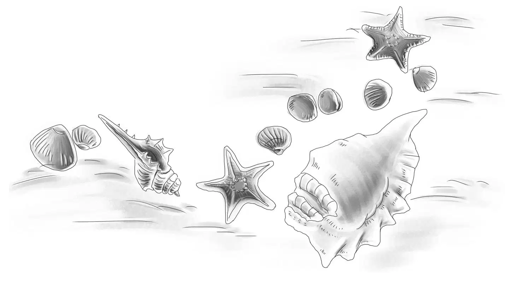
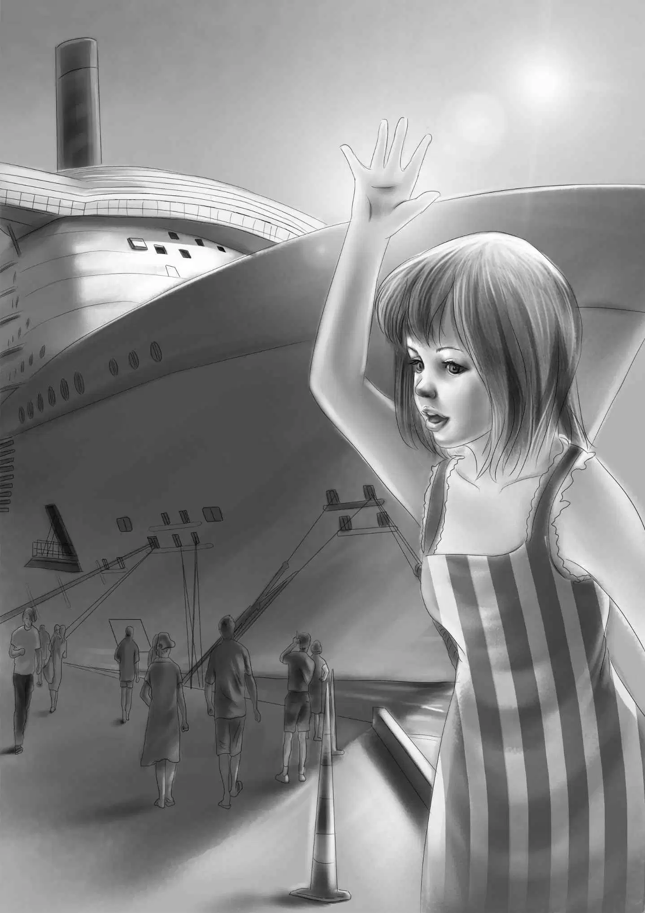

From the South Seas

“今天我有个想法，”星期一吃早餐的时候奥登先生说，“亨利，你看了这份报纸吗？上面说邻镇的阿什兰是世界各地船只的中转地。”
“也有从蓝色海湾来的船吗？”班尼喊道。
爷爷朝班尼点点头：“有来自南太平洋的，今天就有一艘从塔希提岛来的船靠岸，船名恰好也叫‘塔希提’。咱们去阿什兰镇看它入港，怎么样？”
“太酷啦！”班尼欢呼道，“说不定船长能同意我们上船去看看呢！”
“也许吧！”爷爷赞同道，“‘塔希提号’是一艘华丽的游轮，和你们上次去蓝色海湾坐的货船不一样。”
“酷暴啦！”班尼兴奋不已。
“你的形容词用得很贴切！”爷爷笑道，“我还知道‘塔希提号’属于哪家公司呢！”
“那我敢肯定，船长绝对会同意我们上船的。”杰西看着维莉说，“爷爷认识的人真多！”
“我不认识‘塔希提号’的船长，我只是听说他很擅长航海，还非常年轻。”
洗完餐具后，亨利将车倒了出来，一家人上了旅行车，向阿什兰镇进发了。
“船一般都会晚点，”杰西说，“我们可能要等上一整天呢！”
“有这个可能。”奥登先生说，“好在码头上有坐的地方，还有遮阳篷，等的时候你们正好可以欣赏一下过往的船只。”
“爷爷怎么对阿什兰这么熟悉？”亨利问，“要知道我连听都没听说过这个小镇！”
“哈，你忘了吗？我可是在简姑婆的农场里长大的！而且我对‘塔希提号’非常感兴趣，所以已经和卡特先生去过好几次了。”
“难怪！”杰西说，“您想再看一次‘塔希提号’，对吧？”
奥登先生笑着说：“其实不管什么船，我就是喜欢看它们入港而已。”
果然，“塔希提号”晚点了。
“被我说中了，船总是晚点。”杰西说。
于是大家坐了下来，眺望着来来往往的船只。码头有一个很大的空位，是专门留给“塔希提号”停靠的，其间不时有小船进来加点油或水。
“看到那个在船上吃早点的男人了吗？”杰西说，“他正在吃熏肉和鸡蛋。”
“他妻子正给他送吐司过去，”维莉说，“像这样吃住在小船上倒是怪有趣的呢！”
而另一只小船上，几个孩子正调皮地在甲板上爬来爬去。“他们会掉下海的！”维莉不由失声惊叫道。
“别担心，他们不会掉下去的。”爷爷说，“要知道这些孩子都是水里生，水里长的。”
孩子们的妈妈听到这话，不禁抬眼打量了一下爷爷，然后笑道：“是没啥好担心的，这些小家伙打出生起就住在船上了，全是游泳和潜水的好手哩！”
尽管眼前全是新鲜有趣的事儿，可等待“塔希提号”的过程还是漫长而令人心焦的。就这样，大家一直等到了午餐时分。
“咱们先在附近找个地方吃饭吧！”奥登先生建议道，“这样船入港的时候我们就能听到汽笛声了。”
再次坐到正式的餐桌旁吃饭，让奥登一家感觉亲切无比。在用苹果派作为饭后甜点结束了这顿美味午餐后，他们又回到了码头上。
“先生，‘塔希提号’来啦，”一个工作人员说，“它已经入港了。”
“好极了！”奥登先生说，“谢谢你告诉我这个消息！”
工人们纷纷来到码头上，准备帮着拴缆绳。很快，“塔希提号”就出现在大家的视野中，船身雪白得没有一丝杂质。
“我看到了三个汽笛。”维莉说。
“维莉，那不是汽笛。”班尼说，“没看到它们在冒烟吗？应该是烟囱才对。”
见自己闹了这么个笑话，维莉也不禁笑了起来。
随着游轮越驶越近，它的美丽也越来越清晰可见。一只小船迎向它，引导着“塔希提号”慢慢停靠在空泊位上。船栏边的乘客们兴奋地向码头不停挥手，而迎接他们的亲友也簇拥了过去。看到这样温馨的景象，杰西也激动起来，丝毫没注意到，拉里·库克竟然出现在人群中，不过他似乎并不想引人注意，也没朝奥登一家看上一眼。
“那位……是船长吗？”班尼问道。
“没错，从他的制服就能看出来。”
人潮散去后，爷爷才走向了船长：“你好啊，先生，我是詹姆斯·奥登。”
“是吗？”船长说，“久闻大名，今天终于见到您了。”
“这是我的孙儿们，他们很想上船参观一下，不知道可不可以？”奥登先生问道。
“当然可以，”年轻的船长笑着说，“叫我白雪好了，我的船员可以带孩子们到处转转。”
“不会耽误你的时间吧？”奥登先生问。
“不会，不会，”白雪船长说，“我有三天的休假，我的家就在康利镇。”
“康利镇？”班尼说，“我们也住在那儿呢！就在灯塔里！”
白雪船长说：“住在灯塔里一定很刺激！这位是我的经理，他会带你们参观‘塔希提号’的。”
接下来，经理带他们看遍了船上的每个角落，包括锅炉房、游泳池、餐厅和船舱，一切设施都比当时带他们去蓝色海湾的“海星号”要完善得多。

“船上有大厨房吗？”维莉问。
“厨房？哦，有的！我们叫它厨舱，每天有上百人要进餐，需要好多餐盘之类的东西呢，连冰箱都得巨大无比。请往这边走，我带你们去看看厨舱！”
船上的冰箱果然有趣，它足足有一个小房间那么大，有两人正站在冰箱里，往架子上摆放着东西。
“我们也可以进去吗？”班尼问。
“当然可以，”经理笑着说，“冰箱大得很，不过里面很冷，你们最好别待太久。”
“知道，我们不会的。”果不其然，班尼只进去打了个转就出来了，“里面储藏的肉可真多，都可以开个肉铺啦！”
“开几个都没问题。”经理说。
参观完整艘游轮，奥登一家向经理道谢之后，就踏上了回灯塔的归途。
路上，杰西问道：“白雪船长说他的家在康利镇，不知道是哪座房子？”
“如果说他要在镇上待三天的话，我们肯定能找到。”亨利说，“不然咱们去问问豪尔先生，他有可能知道呢！”
晚上，班尼正准备爬到顶楼去睡觉，突然大声喊了起来：“亨利，我真是这个世界上最笨的笨瓜啦！”
“怎么呢？”亨利大声回应。
“白天我在厨舱的大冰箱里曾看到了几个白色的长袋子——就是你用来打捞浮游生物的那种袋子，可我居然忘了讲。”
“这么说起来，老弟，我也笨得很呢！我也看到那些袋子了，可光顾着想超级大冰箱去了，压根就没留意到它们。”
“我也一样！咱们三个简直是笨瓜三人组！”杰西说，“当时真该问问经理，那些袋子是干什么用的。”
正在这时，爷爷的声音传了上来：“你们几个在嘀咕什么呢？”
班尼在楼梯上大声回答道：“爷爷，您还记得咱们在南太平洋上打捞浮游生物用的袋子吗？”
“当然记得！这么说，白雪船长是在帮拉里收集浮游生物喽？嗨，看来咱们都糊涂啦！”
“一家子笨瓜。”班尼总结道。
“对，真是一家子笨瓜。”爷爷笑着附和。